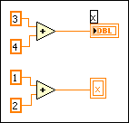
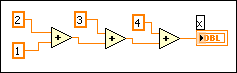

Local and global variables are advanced LabVIEW concepts. They are inherently not part of the LabVIEW dataflow execution model. Block diagrams can become difficult to read when you use local and global variables, so you should use them carefully. Misusing local and global variables, such as using them instead of a connector pane or using them to access values in each frame of a sequence structure, can lead to unexpected behavior in VIs. Overusing local and global variables, such as using them to avoid long wires across the block diagram or using them instead of data flow, slows performance.
To initialize a local or global variable, write known values to the variable before you run the VI. Otherwise, the variables might contain data that causes the VI to behave incorrectly. If the variable relies on a computation result for the initial value, make sure LabVIEW writes the value to the variable before it attempts to access the variable for any other action. Wiring the write action in parallel with the rest of the VI can cause a race condition.
To ensure that the variables initialize before the rest of the VI executes, you can isolate the code that writes the initial value for the variables to the first frame of a sequence structure or to a subVI and wire the subVI to execute first in the data flow of the block diagram.
If you do not initialize the variable before the VI reads the variable for the first time, the variable contains the default value of the associated front panel object.
A race condition can occur when two or more pieces of code execute in parallel and have access to a shared piece of memory. If each piece of code is independent, there is no way to distinguish the order LabVIEW uses to access the shared resource.
Race conditions can cause unpredictable outcomes. For example, if two independent pieces of code access a queue and you do not control the order LabVIEW uses to access the queue, you can cause a race condition.
Race conditions can be dangerous because they can appear and disappear when the timing of a program changes. They can occur when you change operating systems, LabVIEW versions, or other software that runs on the system.
If you cause timing to change in a VI, such as when you update the operating system or LabVIEW version, look for parallel code that accesses the same data, and use a timing condition to control which actions execute first.
Although race conditions can exist any time more than one action updates the value of the same stored data, race conditions often occur with the use of local and global variables or an external file. The following block diagram shows an example of a race condition with a local variable.

The output of this VI, the value of local variable x, depends on which operation runs first. Because each operation writes a different value to x, there is no way to determine whether the outcome will be 7 or 3. In some programming languages, a top-down dataflow paradigm ensures execution order. In LabVIEW, you can use wiring to perform multiple operations on a variable while avoiding race conditions. The following block diagram performs addition operations using wiring instead of a local variable.

|
Tip��If you must perform more than one action on a local or global variable, make sure you determine the order of execution. |
Race conditions also occur when two operations are trying to update a global variable in parallel. In order to update the global variable, an operation reads the value, modifies it, and writes it back to the location. When the first operation performs the read-modify-write action and the second operation follows after, the outcome is correct and predictable. When the first operation reads and then the second operation reads, both operations modify and write a value. This action causes the read-modify-write race condition and produces invalid or missing values.
To help avoid the race conditions associated with global variables, you can use functional global variables to protect critical sections of code that access the action on a variable. Using one functional global variable instead of multiple local or global variables ensures that only one operation executes at a time, so you never perform conflicting operations or assign conflicting values to stored data.
Local variables make copies of data buffers. When you read from a local variable, you create a new buffer for the data from its associated control.
If you use local variables to transfer large amounts of data from one place on the block diagram to another, you generally use more memory and, consequently, have slower execution speed than if you transfer data using a wire. If you need to store data during execution, consider using a shift register.
When you read from a global variable, LabVIEW creates a copy of the data stored in that global variable.
When you manipulate large arrays and strings, the time and memory required to manipulate global variables can be considerable. Manipulating global variables is especially inefficient when dealing with arrays because if you modify only a single array element, LabVIEW stores and modifies the entire array. If you read from the global variable in several places in an application, you create several memory buffers, which is inefficient and slows performance.
Refer to the Managing Performance and Memory book for more information about performance and memory management considerations in LabVIEW.